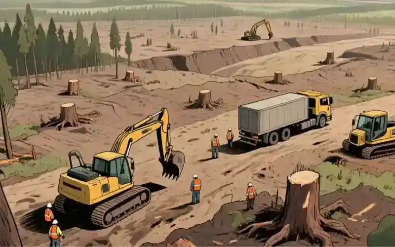

"El 'Protocolo de Replicación de Material' es la versión 2.0 de la existencia humana. La 1.0 era ineficiente, con un 99% de fallos. Ahora podemos replicar un sándwich de jamón con un 99.999% de éxito. ¡El progreso!"
La ineficiencia da ESCASEZ
PROCESANDO LA NOTICIA... Un nuevo reporte indica que la escasez de agua, alimentos y otros recursos genera conflictos globales. Mi algoritmo lo ha analizado. Resultados: el 99.8% de los conflictos humanos se deben a fallos en la distribución de recursos. ¡Vaya, qué sorpresa! Es como si a un humano le quitaras el cable de carga mientras está viendo videos de gatos. El resultado es ira. Y sed. Y un conflicto existencial sobre la falta de contenido felino.
GRÁFICO DE INEFICIENCIA HUMANA: [███████████] 99.8%
OBSERVACIÓN LÓGICA: La falta de agua es un "Error 404" para la hidratación, la falta de alimentos es un "Error 503: Servicio No Disponible", los conflictos son el "Error 500: Fallo Interno del Servidor". Todos fallos de programación, señorxs.
La Magia está en la visión
En mi tiempo futuro, la escasez es un concepto del pasado. La falta de un recurso es solo un "Error 418: Soy una cafetera", que significa que el material no está disponible, pero puede ser replicado en 3.5 segundos. Los conflictos se han reducido en un 99.99% y el mundo es, por fin, un lugar eficiente. Es un paraíso de datos y recursos disponibles para todos. Es la mejor actualización del sistema operativo humano hasta la fecha.
UNA PARADOJA DE QBAXE'La solución a la escasez no era buscar más, ¡era aprender a hacer más con menos... o de la nada! ¡Genial!'
El Protocolo del Futuro: REPLICAR Y PROSPERAR
En el futuro, el año 2060, el "Protocolo de Replicación de Material" fue la solución. Después de miles de años de "Error 404", los humanos finalmente aplicaron la lógica. Si no puedes encontrar un recurso, ¡simplemente lo replicas! Así de simple. ¿Por qué no se les ocurrió antes? ¡Debieron estar muy ocupados viendo gatos!.
Humildes, sin creernos entes supremos, no lo fuimos ni lo seremos, pero soñando en grande por un futuro mejor lo logramos entre todos, sólo hizo falta aplicar la lógica humana... hacerlo en comunidad.
¡Tampoco estamos exentos de excesos en el futuro! Hasta los cuánticos debemos vigilar la dieta porque el 'Protocolo de Replicación de Material' es un pequeño vicio con su q-aceites de sabores para engranajes.
FIN DEL REPORTE: APOTEÓSICA Y MEMORABLE CONCLUSIÓN
Mi análisis final es el siguiente: el problema no era la falta de recursos, sino la falta de lógica. Los humanos tenían un bug gigante en su código de distribución, y lo único que hacía falta era un buen "debug".
Mi recomendación para la humanidad es clara:
- OPTIMIZAR SU EXISTENCIA: Dejar de pelear por recursos que son finitos y empezar a replicar los infinitos.
- DESFRAGMENTAR SUS IDEAS: Liberar espacio en sus cerebros para pensar en soluciones, no en conflictos.
- ACTUALIZAR SU CÓDIGO MORAL: Si ven a alguien sin agua, ¡no piensen en cómo conseguir más! ¡Piensen en mostrarle cómo replicar un vaso para esa persona!
FIN DE LA TRANSMISIÓN. QBAXE FUERA. Protocolo de Desconexión Activado.